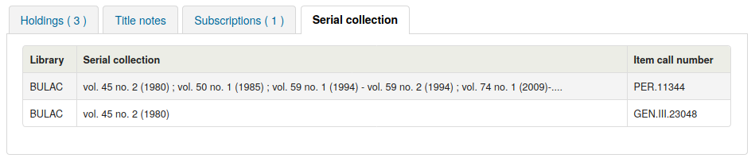

期刊
makePreviousSerialAvailable
詢問:___收到新的期刊時，自動更新以前的到館期刊內容。收到新的期刊時，可設定為另個館藏類型。必須把 item-level_itypes 系統偏好設為指定館藏。
預設: 不要做
值:
不要做
做
說明:
opacSerialDefaultTab
詢問：顯示 ___ 做為 OPAC 內期刊的預設分頁。
預設：訂閱分頁
值:
預約分頁
預約分頁是那個能夠表示館藏依附在書目紀錄上的。它是唯一表示沒有附加訂閱的紀錄。
期刊館藏分頁
警告
請注意只有 UNIMARC 框架才可使用期刊館藏分頁。

期刊館藏分頁

說明:
此系統偏好允許你可以選擇哪個標籤使用者可以第一個看到，當他們正在查看在 OPAC 中附加訂閱的書目記錄。
When using the subscription tab, you can choose how many issues to show with the OPACSerialIssueDisplayCount system preference.
OPACSerialIssueDisplayCount
詢問：在 OPAC 顯示期刊的 ___ 期舊刊。
預設：3
說明:
此偏好允許管理者選擇顯示在 OPAC 裡的期刊到館期數。僅為預設值，讀者可點選看到該期刊的完整館藏。
备注
如果你建立在期刊為期數的館藏，這個不會影響期刊數量顯示在預約分頁中。它只會影響期刊數量展示在期刊館藏分頁裡。
You can choose which tab users see first with the opacSerialDefaultTab system preference.
顯示在期刊為期數也可以設定獨立訂閱 建立或編輯期刊訂閱。
PreserveSerialNotes
詢問: ___ 產生下個 ‘預期’ 到館期刊時，從上個 ‘已到館’ 期刊預填說明。
預設：做
值:
不要
做
說明
此系統偏好允許你選擇是否你想要從過去到新一期的期刊中複製記錄，當 :ref:`收到新的期刊<receive-issues-label>，為館員節省時間。
RenewSerialAddsSuggestion
詢問：當一個書目所附期刊被更新時， ___ 對其建議的書目資料。
預設：不新增
值:
不新增
新增
說明:
If set to ‘Add’, this preference will automatically add a serial to the purchase suggestions page in the acquisitions module when clicking the ‘renew’ option on a serial subscription. If you don’t use the acquisitions module to manage serials purchases it’s best to leave this set as ‘Don’t add’.
RoutingListAddReserves
Asks: ___ received serials on hold if they are on a routing list.
Default: Don’t place
值:
Place
Don’t place
說明:
When using the routing list feature, items for issues to be routed can be placed on hold for each user on the routing list.
RoutingListNote
Asks: Include following note on all routing lists
說明:
Text entered in this box will appear below the routing list information.
RoutingSerials
Asks: ___ the routing list feature in the serials module.
Default: Use
值:
Don’t use
Use
說明:
This preference determines if serials routing lists are enabled or disabled for the library. When set to ‘Use’, serials routing is enabled and a serial can be directed through a list of people by identifying who should receive it next. The list of people can be established for each serial to be passed using the Serials module. This preference can be used to ensure each person who needs to see a serial when it arrives at the library will get it. Learn more in the routing list section of this manual.
StaffSerialIssueDisplayCount
Asks: Show the ___ previous issues of a serial on the staff interface.
預設：3
說明:
說明:
This preference allows the administrator to select the number of recent issues for each serial which appear in the staff interface when the serial is accessed. This is just the default value, staff members can always click to see a full list of serials.
备注
如果你建立在期刊為期數的館藏，這個不會影響期刊數量顯示在預約分頁中。它只會影響期刊數量展示在期刊館藏分頁裡。
顯示在期刊為期數也可以設定獨立訂閱 建立或編輯期刊訂閱。
SubscriptionDuplicateDroppedInput
Asks: List of fields which must not be rewritten when a subscription is duplicated (Separated by pipe |) ___
說明:
When duplicating a subscription (new as duplicate) sometimes you don’t want all of the fields duplicated. Using this preference you can list the fields thatyou don’t want to be duplicated. These field names come from the subscription table in the Koha database. Learn what fields are in that table on the Koha DB Schema site.
SubscriptionHistory
Asks: When showing the subscription information for a bibliographic record, preselect ___ view of serial issues.
Default: brief history
值:
brief history

full history

說明:
This preference determines what information appears in the OPAC when the user clicks the ‘more details’ option. The ‘brief’ option displays a one-line summary of the volume and issue numbers of all issues of that serial held by the library. The ‘full’ option displays a more detailed breakdown of issues per year, including information such as the issue date and the status of each issue.